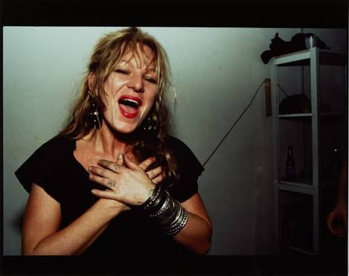

About the Author

Downtown New York. Queer Underground. Beautiful Misfits.
Cookie Mueller was an American writer, actress, and underground cultural icon whose life and work became inseparable from the experimental art scenes of the 1970s and 1980s. Born in Baltimore in 1949, Mueller moved through a series of unconventional communities before eventually settling in New York City. She was a fixture of the downtown scene, moving between underground film, queer nightlife, experimental theater, punk culture, and independent publishing. She wrote art criticism for Details magazine and a health advice column for the East Village Eye, developing a distinctive voice that was irreverent, funny, unsentimental, and completely uninterested in conventional respectability.
Mueller first became known through her collaborations with filmmaker John Waters, whom she met in Baltimore in 1969. She became one of the original members of his group of actors and collaborators, known as the Dreamlanders, appearing in films including Multiple Maniacs, Pink Flamingos, Female Trouble, and Desperate Living. Waters' deliberately outrageous films celebrated outsiders, sexual transgression, bad taste, and people who existed outside conventional ideas of beauty and morality. Mueller was perfectly suited to this world, bringing an unmistakable personality and comic presence to the screen. Her work with Waters established her as a cult figure long before she became known for her writing.
After moving to New York in 1976, Mueller became deeply involved in the city's downtown art and queer communities. She was particularly close to photographer Nan Goldin, whom she met in Provincetown that same year. The two developed an intimate friendship that lasted until Mueller's death, with Goldin photographing her throughout the years. Mueller became one of the central figures in Goldin's photographs of her friends and chosen family, appearing in her photographic series The Ballad of Sexual Dependency and in a dedicated portfolio documenting their friendship. Through Goldin's camera, Mueller became part of a larger visual record of queer relationships, nightlife, intimacy, and the communities that formed around downtown Manhattan.
Mueller was also a prolific writer. Her collection of autobiographical stories, Walking Through Clear Water in a Pool Painted Black, was originally published posthumously in 1990 and later expanded in a 2022 edition. The stories move through Baltimore, Provincetown, New York, and the many strange encounters that shaped her life. Her writing is conversational, darkly humorous, and full of unforgettable characters. She writes about sex, drugs, travel, friendship, motherhood, and the absurdity of everyday existence without attempting to make herself appear particularly respectable. Mueller died of AIDS-related complications in New York in 1989, at just forty years old. Her writing and the photographs of Nan Goldin remain important records of a downtown community and artistic world that was profoundly affected by the AIDS crisis.
Explore Her Work
Mueller's collected stories, Walking Through Clear Water in a Pool Painted Black, offer an intimate look into her life and the underground communities she inhabited. Her collaborations with John Waters and her appearances in Nan Goldin's photographs also provide different perspectives on the world she helped create.
Explore Semiotext(e) and Her Collected Writing